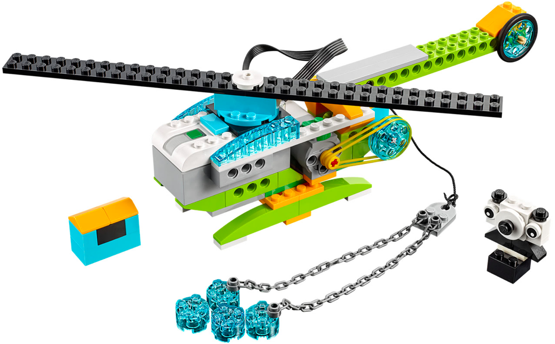
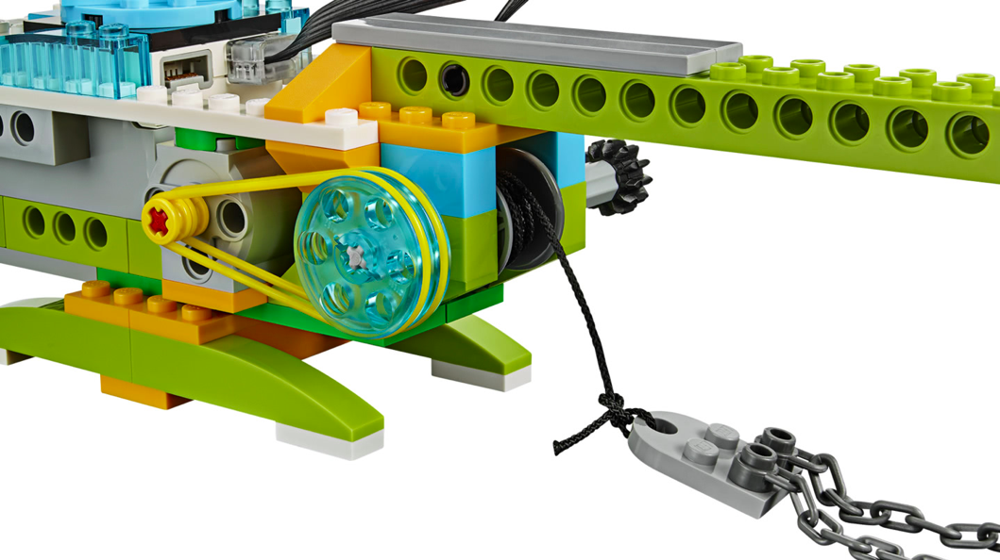
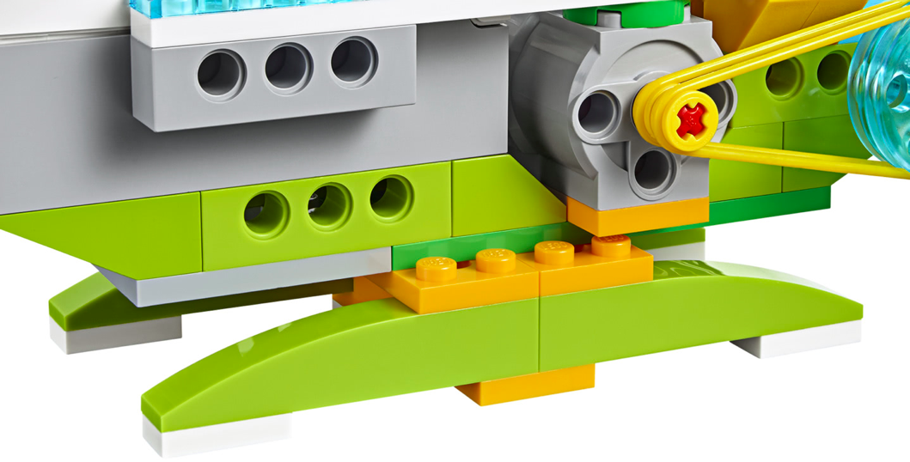
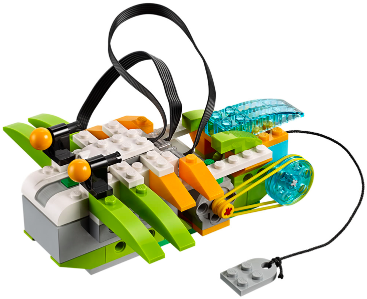
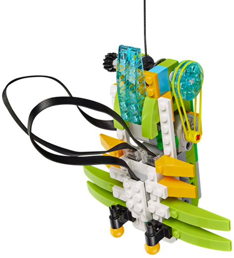
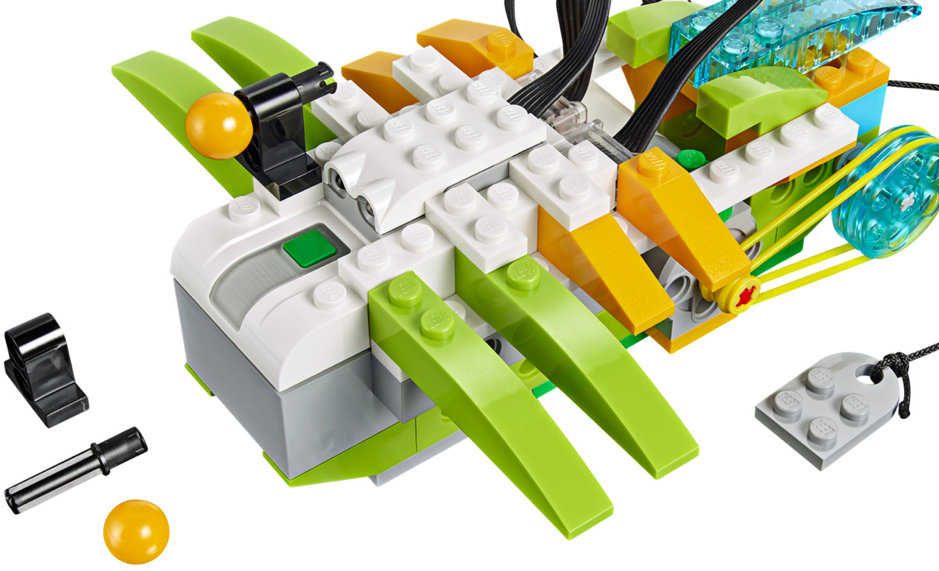

En este proyecto el alumno debe construir la base de los dos siguientes montajes. Debe hacer una serie
de retos iniciales para ver como se realiza el movimiento y como se traslada de un sitio a otro.
El primer montaje tiene las instrucciones para construir la parte de los engranajes. Este robot será la base
para los dos siguientes robots.
Los dos robots siguientes no tienen instrucciones y solo disponen de 3 fotos. Se construyen sobre la
base del montaje anterior.
El alumno debe comprender como se aprovecha el mecanismo de rotación para algo tan cotidiano como recoger una
cuerda.
Además de como este mecanismo se puede usar para recoger cosas atadas a los extremos de dicha cuerda.
• Hacer que el robot enrolle la cuerda.
• Hacer que el robot desenrolle la cuerda hasta el tope y que no se vuelva a enrollar.
• Repetir anterior pero que espere a detectar el sonido de una palmada.



• Hacer que el helicóptero rescate al panda siguiendo la siguiente secuencia:
- Recoger cubos 4 cubos de agua y dejarlos en la zona del incendio.
- La cadena debe esperar un tiempo hasta que el panda sea enganchado.
- Subir la cadena y llevar al panda a una zona segura.



• Hacer que la araña enrolle y a continuación desenrolle la cuerda.
• Repetir anterior pero que espere a detectar el sonido de una palmada.
{kind=link}
{kind=link}